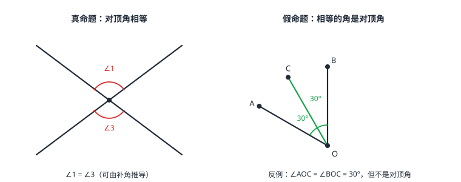

命题、定理与证明
可以判断真假的陈述句叫命题，由题设和结论组成。真的命题要么是基本事实（公理），要么是被证明过的定理；假的命题用反例推翻。证明就是从题设出发、每一步写依据地走到结论——「看起来对」和「量出来对」都不算数。
| 所属主题 | 图形的初步认识 |
|---|---|
| 所属模块 | 几何 |
| 课标学段 | 第四学段（7~9 年级） |
| 前置知识 | 相交线与平行线 |
| 核心素养 | 推理能力抽象能力 |
教材定位
人民教育出版社《人教版（2024版）义务教育教科书·数学》
七年级下册第7章 相交线与平行线7.3 定义、命题、定理
对应七下 7.3。命题的四个部分与证明的书写格式在此给出，本篇在此基础上讲反例的作用与「先猜后证」的思路。
说明
判断一件事情的陈述句叫命题。每个命题都能拆成两截：「如果」后面是题设（已知什么），「那么」后面是结论（要断定什么）。命题非真即假：题设成立时结论一定成立的是真命题；题设成立而结论不成立的是假命题。疑问句、作图指令（「画一个 60° 的角」）没有真假，不是命题。
长期筛选下来的真命题分两层：直接承认的基本事实（如「两点确定一条直线」）和经过推理证明后才可用的定理（如「对顶角相等」）。证明就是从题设出发，每一步都依据定义、基本事实或已证定理，一步步逼近结论的推理链。假命题不用「证假」——举一个满足题设而不满足结论的反例即可推翻。
使用场景
判断与改写：拿到一句数学话，先改写成「如果……那么……」分清题设结论，再判真假。真命题想证明思路，假命题找反例——这是几何论证的日常动作。
证明的书写是规范性训练：已知、求证、证明三段，每步之后括号里写依据。中考解答题按步给分，依据缺失等于链条断裂。
注意点
反例必须「满足题设、不满足结论」两个条件都占：只满足一半不算数。举反例前先把命题改写成标准形式，检查你要举的例子是否真落在题设里。
证明里禁止出现「由图可见」「量出来是」：图形是示意图，位置关系必须由已知或已证结论给出；测量有误差，也不能作为依据。每一步写完就问一句「凭什么」。
证明

图 1：对顶角相等是真命题（左）；「相等的角是对顶角」是假命题——角平分线分出的两个 30° 角就是反例（右）
证明
结论 1要断言一个结论对所有情形成立，只能靠推理，不能靠量得准。
为什么「看起来对」不算数：让两个人分别用量角器量两条「看起来平行」的直线与截线的同位角，可能得到 60° 和 61°——测量有误差、观察会骗人。要断言一个结论对「所有」情形成立，只能靠推理覆盖一般情形，不能靠量得准。（图 1 右画的就是这个反例）
关键一步依据是「所有情形」与「一次测量」的差别：60° 和 61° 说明读数带误差、观察会骗人，一次量度只覆盖被量的那一个具体情形；而命题断言的是无穷多个情形，量得再准也只量了一个对象，所以必须换成能覆盖一般情形的推理。
结论 2证明是「已知真话 + 题设条件」首尾相接的推理链，每一环都必须有依据。
证明的结构是链条：每个环节 = 一个已知的真话（定义/基本事实/已证定理）+ 题设里的条件，推出下一句真话。任何一环没有依据，后面的结论都悬空。所以写证明时每步括号里的依据不是格式美癖，是链条的受力的铆钉。
关键一步每一环的已知只有三个来源：定义、基本事实、已证定理，再加上题设里的条件。「已证定理」这一类尤其要注意——它必须是前面已经证过的，不能拿还没证的东西当依据。这四类来源就是链条能承住力的全部理由。
结论 3一个满足题设却不满足结论的反例就能推翻命题；一百个正例也证明不了真命题。
反例为什么有「一票否决权」：说「所有的 x 都满足性质 P」相当于对无穷多个对象做了承诺；只要有一个满足前提却违背 P 的反例，承诺就被击穿——命题为假。反过来，一百个正例也证明不了真，因为例子永远只是无穷多个情形中的有限几个。
关键一步依据是「全称断言」与「个别反例」的不对称：说「所有的 x 都满足性质 P」等于对无穷多个对象同时作承诺，一个反例就足以让承诺破产；而要证明承诺成立，得覆盖无穷多个情形，例子再多也只是无穷多个情形里的有限几个。
结论 4命题「两个锐角的和小于 180°」可证，是真命题。
命题「两个锐角的和小于 180°」为什么可证：锐角的定义是小于 90° 的角，设两个角都小于 90°，由不等式性质两式相加，和小于 180°。每一步用定义和不等式性质，覆盖任意两个锐角，这就是证明。
关键一步依据每一步都可查：锐角是「小于 90° 的角」用的是定义，两式相加得和仍小于 180° 用的是不等式的同向相加性质。之所以算证明而不算举例，是因为推理中没有出现任何具体的角，条件覆盖的是任意两个锐角。
动手实验
试一试「举例」的两种用法：命题「两个锐角的和是钝角」——取 30° 和 40°，和为 70°，还是锐角，反例出现，命题为假；命题「两个锐角的和小于 180°」——再多的具体例子也只能增加信心，真正的确认靠上面的两行推理。再让两个人量同一个 60° 角，读数 59.8° 和 60.2°——体会「量」为什么进不了证明。
解题思路
判断命题四步：①是不是陈述句（疑问/作图指令直接排除）；②改写成「如果……那么……」；③判断真假——真的想证明（从定义和已知推），假的找反例；④反例要完整落在题设里并击穿结论。
证明书写三段式：已知（把文字条件翻译成符号和图形标注）、求证（把要证的结论写成符号）、证明（每步后面括号写依据：定义、基本事实、已证定理、等式性质）。写完倒读一遍：每问一次「凭什么」，括号里都要有答案。互逆命题：把「如果」「那么」对调得到的新命题要单独判真假——真命题的逆命题可能真也可能假。
按场景的例题
例 1（场景：图形设计） 剪纸折痕中的等角
剪纸图案中，一条折痕把一个角分成相等的两半。命题「相等的角是对顶角」是真命题还是假命题？说明理由。
解：改写：如果两个角相等，那么它们是对顶角。找反例：折痕（角平分线）分出的两个角相等（题设成立），但它们公共顶点、共一条边，两边不互为反向延长线，不是对顶角（结论不成立）。反例既满足题设又击穿结论，命题为假。
答：假命题；角平分线分出的两个等角是反例。
例 2（场景：测量与工程） 工地放线规则的证明
命题「垂直于同一条直线的两条直线平行」。把它改写成标准形式，并写出证明。
解：改写：如果两条直线都垂直于同一条直线，那么这两条直线平行。已知：a⊥c，b⊥c。求证：a∥b。证明：设 c 与 a、b 分别交于点 M、N。因为 a⊥c，所以 a 与 c 相交所成的角是 90°（垂直的定义）；同理 b 与 c 相交所成的角是 90°。这两个角是同位角且相等（等量代换），所以 a∥b（同位角相等，两直线平行）。
答：命题为真；由垂直定义得一对 90° 的同位角，再由平行判定得出。
例 3（场景：竞技与游戏） 猜数游戏里的判断题
猜数游戏里出现命题：「如果两个数互为相反数，那么它们的平方也互为相反数」。这个命题是真是假？
解：找反例：2 与 −2 互为相反数（题设成立），但 2²=4、(−2)²=4，两个平方相等，而 4 的相反数是 −4，所以平方并不互为相反数（结论不成立）。命题为假。把结论改对：互为相反数的两个数，平方相等——这个新命题对任意相反数都成立（(−a)²=a²，平方消去符号），是真话。
答：假命题；反例是 2 与 −2，平方都是 4。
常用推论
定理都是真命题，且可以直接引用作后续证明的依据；基本事实（公理）是不加证明的出发点。
一个反例足以否定一个全称命题；有限多个正例不能证明它。
每个命题都能拆成题设与结论；把题设结论对调得到互逆命题，真假要单独判断。
易错点
错把「画一个 60° 的角」当作命题。
为什么错它是作图指令，没有真假可言；命题必须是能判断真假的陈述句。
正确「角平分线分出的两个角相等」这样能分真假的陈述才是命题。
错想靠「多举几个例子」证明命题成立。
为什么错例子只覆盖有限情形，命题承诺的是全部情形；只有推理链能覆盖「任意」。
正确举例用于发现规律或找反例；证明必须写完整推理。
错证明过程中写「由图可以看出」。
为什么错图是示意图：位置、平行、垂直必须来自已知或已证结论，不能来自图面观感。
正确每步写依据；图形只帮忙找思路，不进证明。
直观理解
命题像判决书：题设是案情，结论是判决。证明是庭审——每句话都要有证据（依据），没有证据的句子会被驳回。反例是一桩翻案：只要有一个案子按同样案情却判不出同样结果，整条判例作废。举例子像是目击证人（增加信心但不定案），证明才是完整的证据链。